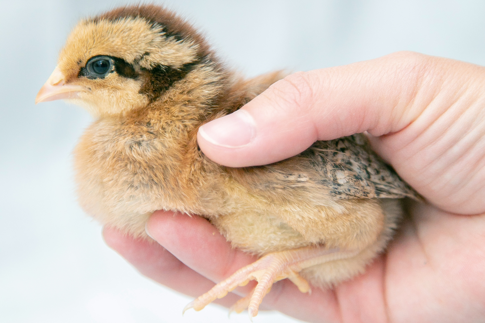
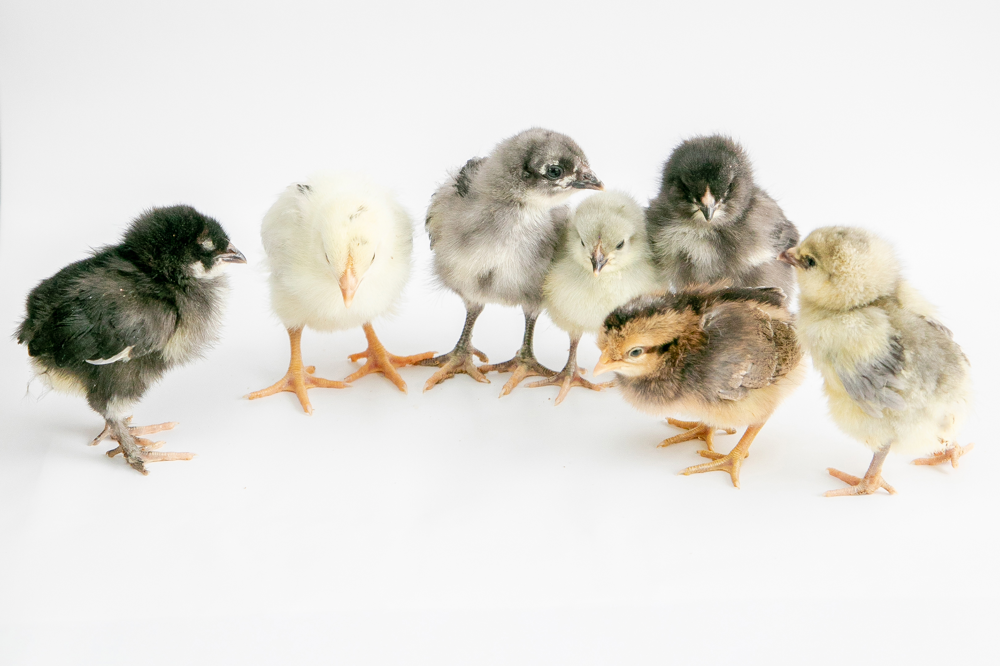
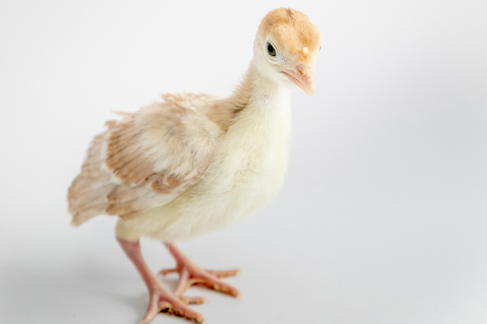
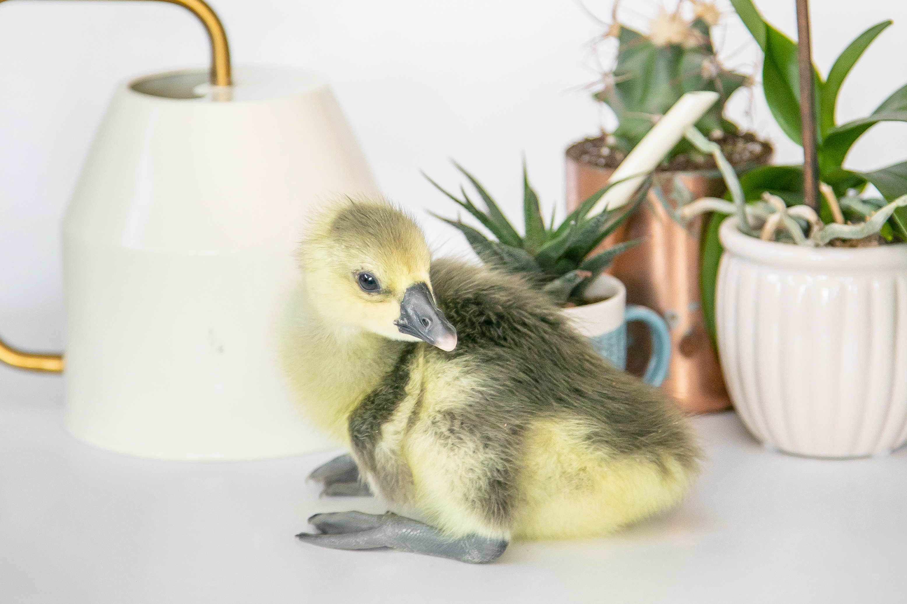
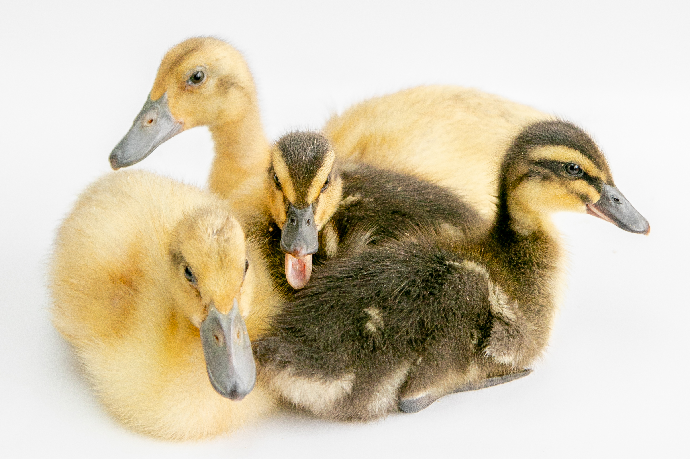
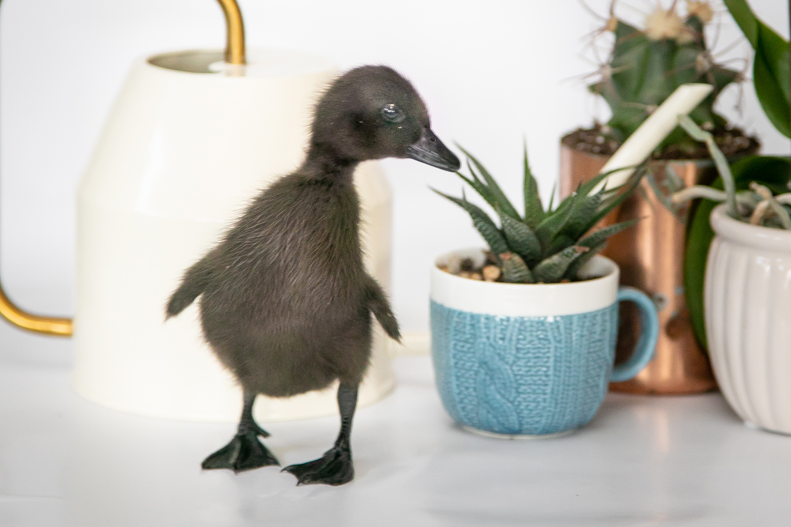
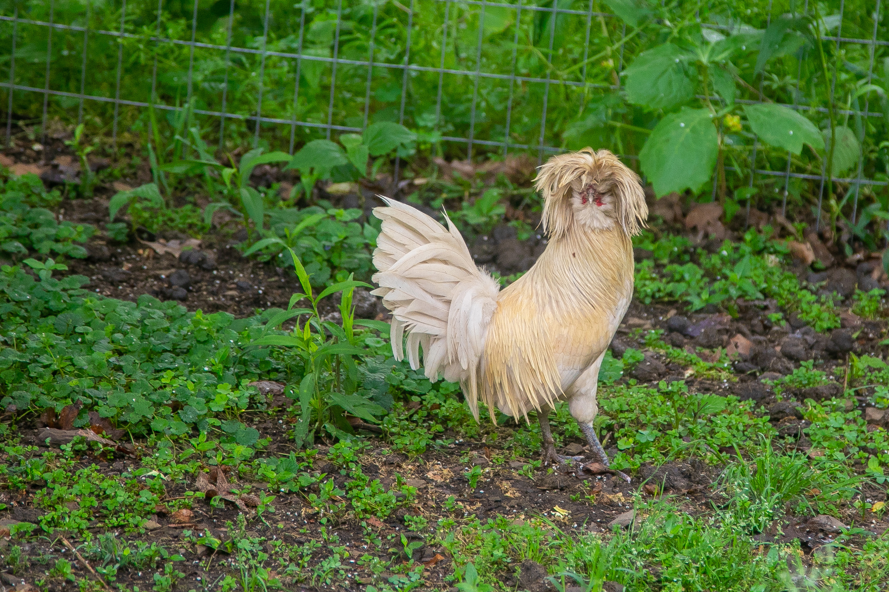
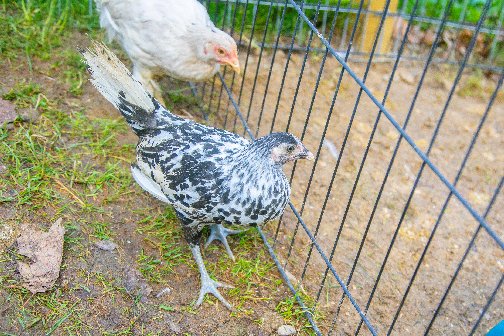

Our kids get to swing in one of the prettiest places I have ever lived. Not sure if they
appreciate that now, but I sure do.One of the biggest reasons we bought our house, was for this outbuilding. Right now it's acting
as garage and barn. In the future it will also be a rec room and shop!

Before moving to Pennsylvania, we had enough property in California to buy or first round of
chicks. We sure loved these babies. Right after they started laying, we ended up moving. Thankfully, our
ladies went to wonderful homes, and we still get updates.Three of our other "farm" babies in California were our mini pigs. This is Jim, modeling his
best
look in our old enclosure. All three pigs moved with us. In our minivan. My husband drove the pets. I
drove the kiddos. Yes...it was crazy.

Once here in Pennsylvania (we arrived end of February, 2021), we wasted no time starting up
our new flock. Just a few of the bitties we now love.Since we got our chicks right before Easter, of course we had to do something precious.

Along with chicks, this year we added a poult - a baby, Bourben Red turkey. Serious cuteness.

But, we were not done. Soon we acquired an African goose. Still to this day we are not sure of
its gender, but we refer to "her" as McGonagall. If we're wrong, no worries. Dumbledore will be just as
adored.

Our kids had begged us for ducklings back in California. We promised them that if we moved, we
would fulfill their wish. Well, we moved, and well, we have ducks. As ducklings, they were too cute to
handle.

Doby is a bantam, or mini, East Indie. She was so tiny, it was ridiculously adorable.
Look at Doby now! She is the far right, and those feathers are astounding. Later we added
Hermione (left), and Draco (center), to our flock. Draco is a drake (perfect naming), and the sweetest,
snuggly boy.This is one of the yellow duckligs from before, Harry! He is getting his adult coloring on his
head. He and Ginny are inseparable, unless he wants a drink.Snoopy, our turkey, has grown so much. Still unsure about sex, but love watching this baby grow.
All around our animals we have been discovering what our yard has in the way of blooms! Since we
bought in the winter, every beautiful blossom is a fun surprise.Although, if you thought it was spring, never be too sure the weather will agree. Snowy days,
whenever they come, are so calm and wonderous. Just never plant your garden before Memorial Day!

Either known as Kurt Cobain or Duster, we love this ridiculous, bantam Polish roo.And Cindy - either Lauper or Lou Who - is Duster's boo. They are fantasticly hilarious, and
sweet!
Duster, Cindy and Feather came with us from California. They have established themselves out in
the yard. But Emma, and all the other chicks we bought here, are our layers. They have their own coop
and run, and seem to have ample space and time to relax.Our up-and-coming layers are not to be outdone by the chickens in the yard. Frieda has quite the
do, and she will (hopefully) lay bright blue eggs to boot!

Diane Keaton is a silver Hamburg chick. She gets prettier by the day.Bette Midler (right) and Goldie Hawn (they make a trio with Diane Keaton - my "First Wives Club"
ladies) are inseparable buddies. Goldie is not missing feathers. She is a naked neck, or turken!
Chickens and pigs are cool just being them. Us humans have to use gnomes and other little
figurines to make us more interesting.Another first for us is owning guine fowl. As babies they are called keets. These are still a
mystery to us. We don't know how to sex them. And we cannot take photos of them unless they are
enclosed. Even as keets, these babies are fast and furious!Even more velociraptor-like than chickens, guinea fowl are supposed to be great hunters of
insects. Let's hope Ringo, Paul, John and George do their job!Every good farm has a good dog. Kirk came with us from California, and he is truly man's best
friend.Dwight is loving the new yard. Much bigger than his space in California, and more mud and dirt
to root around in. He is handsome, with our without some carrot on his lip. Feather, the sneaky roo,
sometimes rides on Dwight's back. Hilarious.Baby Pam was small enough to travel by cat carrier when we came. As a baby she lived indoors,
snuggling on the couch and using a litter box. Here, there is just too much to do for a pig to stay
inside all day. Our eight month old is growing too fast!And here's the whole gang, so far. They will be joined by the ducks and turkey and goose and
guineas soon. Until then, this crew all love to bunch and munch together.Animals we own are wonderful. But volunteer friends are always welcome! We were so excited to
watch these robins from egg to chick, to flying away. Here they're with Daddy, who just brought a worm.
That's love.